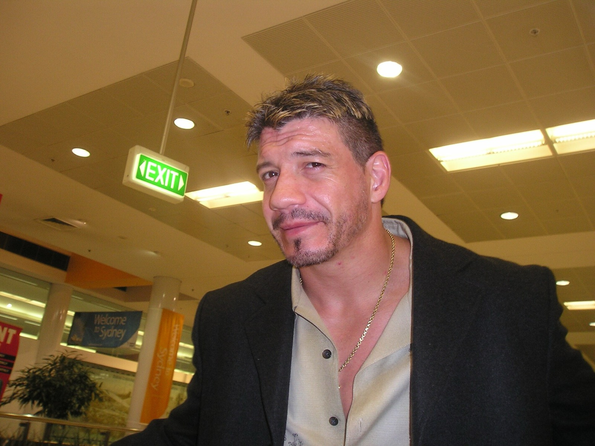

Eddie Guerrero e il trucco della sedia: perché il pubblico amava chi barava
Eddie Guerrero vinceva barando e il pubblico lo adorava proprio per questo. Il trucco della sedia, il motto "I Lie, I Cheat, I Steal" e il titolo WWE del 2004: perché Latino Heat è il bugiardo più amato della storia del wrestling.
Foto in copertina: paddynapper, CC BY-SA 2.0, via Wikimedia Commons
Lo sapevi che Eddie Guerrero vinceva barando, e il pubblico lo amava proprio per questo?
È la curiosità del mio short. Ed è una cosa che nel wrestling non succede quasi mai: di solito chi imbroglia viene fischiato. Con Eddie no. Con Eddie la gente aspettava il trucco, e quando arrivava esplodeva.
Il trucco della sedia
Il suo colpo più famoso non era una mossa. Era una recita.
Eddie prendeva una sedia, la sbatteva sul ring con tutta la forza, poi la lanciava al suo avversario. L'altro la prendeva al volo, d'istinto. E in quel preciso istante Eddie si buttava a terra, tenendosi la testa, come se fosse stato colpito.
L'arbitro si girava, vedeva l'avversario con la sedia in mano ed Eddie a terra dolorante. Squalifica. Vittoria per Eddie.
Semplice, geniale e ogni volta diverso, perché lo faceva con un tempismo e una faccia da attore che nessun altro aveva. E nel wrestling, come ti ho spiegato parlando di perché gli arbitri non vedono mai niente, l'arbitro può punire solo quello che vede.
"I Lie, I Cheat, I Steal"
Il suo motto era tutto un programma: I Lie, I Cheat, I Steal. Mento, imbroglio e rubo. È finito anche in una delle sue musiche d'ingresso.
Era il cuore del personaggio Latino Heat: un furbo simpatico, che arrivava sulla sua lowrider, faceva l'occhiolino al pubblico e poi ti fregava sotto gli occhi di tutti. Non era un cattivo da odiare. Era il ladro per cui finivi a fare il tifo.
Ed è per questo che il pubblico lo amava: barava, sì, ma lo faceva con talento e con il sorriso. E quando serviva lottare davvero, era uno dei più forti tecnicamente della sua generazione.
Il campione WWE del 2004
Il momento più alto arriva a No Way Out 2004. Eddie batte Brock Lesnar e diventa WWE Champion. È il suo unico titolo mondiale, ma vale una carriera intera: il ragazzo di El Paso, figlio del lottatore Gory Guerrero, campione del mondo dopo anni di battaglie, anche personali.
La sua rivalità più famosa, quella con Rey Mysterio, te l'ho raccontata in Rey Mysterio contro Eddie Guerrero.
Viva la Raza
Eddie è morto il 13 novembre 2005 a Minneapolis, a soli 38 anni. Nel 2006 la WWE lo ha inserito nella Hall of Fame.
Per me Eddie è la prova che nel wrestling il personaggio conta quanto la tecnica. Tanti sanno lottare, pochissimi sanno farti ridere e farti tifare mentre imbrogliano. Ancora oggi, quando qualcuno lancia una sedia e si butta a terra, il primo nome che ti viene in mente è il suo.
Te lo ricordavi il trucco della sedia? Scrivimelo nei commenti dello short e iscriviti al canale Tony Wrestling. Altre curiosità nella rubrica Lo sapevi che e tra i miei Shorts.
Fonti:
- Short: Mitico Eddie (Tony Wrestling)
- Eddie Guerrero, Wikipedia (nascita a El Paso, Gory Guerrero, motto "I Lie! I Cheat! I Steal!", Latino Heat, titolo WWE a No Way Out 2004, morte il 13 novembre 2005, Hall of Fame)
Domande frequenti
Qual era il trucco della sedia di Eddie Guerrero?
Prendeva una sedia, la sbatteva sul ring, la lanciava all'avversario e si buttava a terra fingendo di essere stato colpito. L'arbitro si girava, vedeva l'avversario con la sedia in mano e lo squalificava.
Cosa vuol dire "I Lie, I Cheat, I Steal"?
Vuol dire "Mento, imbroglio e rubo". Era il motto di Eddie Guerrero, il suo Latino Heat, ed era usato anche in una delle sue musiche d'ingresso.
Eddie Guerrero è stato campione WWE?
Sì. Vinse il WWE Championship a No Way Out 2004, battendo Brock Lesnar. Fu il suo unico titolo mondiale.